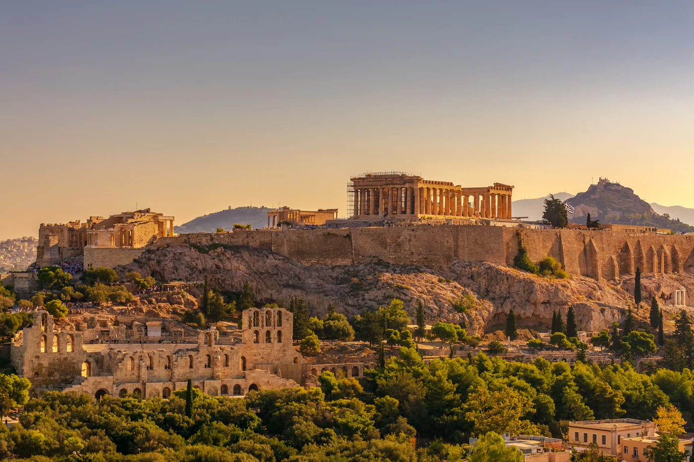

Гайды / Афины
Афины — когда ехать, аэропорт, что обязательно посмотреть

Когда ехать в Афины — лучшее время для посещения Акрополя без толп
Афины приятнее всего осматривать весной (апрель–май) и ранней осенью (сентябрь–октябрь) — температура мягкая, тогда как летом (июль–август) в городе бывает и выше 35°C, что тяжело переносится при долгих прогулках по Акрополю и другим открытым площадкам. Зима мягкая и дождливая — подходит для короткой городской поездки без пляжа.
Аэропорт Афин и путь от аэропорта до центра города
Аэропорт Элефтериос Венизелос (ATH) — единственный крупный аэропорт Афин, примерно в 30–35 км от центра. До центра можно добраться на метро (синяя линия/3, прямо до площади Синтагма примерно за 40 минут), на экспресс-автобусе (дешевле, медленнее, удобно ночью, когда метро ходит реже) или на такси (фиксированная цена по городу, удобно для группы, с большим багажом или поздно ночью).
Сколько стоит поездка в Афины — ориентировочные цены
- Билет в Акрополь — около 20€ летом (апрель–октябрь) и около 10€ зимой; комбинированный билет на Акрополь и ещё 6 археологических объектов стоит около 30€ и окупается, если планируешь посетить больше двух объектов.
- Метро от аэропорта — около 9–11€ с человека в одну сторону; экспресс-автобус дешевле, обычно около 5–6€.
- Ужин в таверне в Плаке — от 12–18€ с человека за основное блюдо, тогда как места вне туристической зоны (например, вокруг Монастираки, в стороне от главной улицы) обычно на 20–30% дешевле при похожем качестве.
- Кофе/фраппе — 3,5–5€ в центре, дешевле в районах в стороне от туристического маршрута (Пангради, Кукаки).
Что обязательно посмотреть в Афинах за 3 дня
- Акрополь и Музей Акрополя — иди рано утром или за час-два до закрытия; летом главная проблема — толпы и жара, а не цена билета.
- Плака — старый квартал у подножия Акрополя, хорошая база для прогулок и еды, пешком до большинства остальных мест.
- Монастираки и блошиный рынок — самые оживлённые по утрам в выходные.
- Национальный археологический музей — если, кроме Акрополя, планируешь посетить всего один музей, пусть это будет он.
- Холм Ликавитос — лучший вид на город и закат, особенно ценно, если не успеваешь добраться до островов.
Если у тебя больше 3 дней, паром до ближайшего острова (например, Эгина, однодневная поездка из порта Пирей) разнообразит чисто городской ритм поездки.

Где поесть в Афинах — местная еда, которую стоит попробовать
Чтобы почувствовать настоящий вкус города, ищи небольшие традиционные таверны, а не рестораны с меню на пяти языках у входа — это почти всегда признак туристических цен без лучшего качества. Обязательно попробуй: сувлаки (часто лучше всего с уличных лотков, а не в ресторанах с посадкой), гемисту (перец и помидоры, фаршированные рисом), мусаку и местный дзадзики со свежеиспечённым хлебом. Квартал Псири — более дешёвый и аутентичный вариант для ужина, чем сама Плака, примерно в 10 минутах ходьбы.
Скрытые места в Афинах вдали от основных туристических маршрутов
- Анафиотика — крошечный квартал в кикладском стиле, спрятанный прямо под Акрополем, с белыми домиками и узкими лестницами; большинство туристов проходят мимо входа, не замечая его.
- Квартал Экзархия — альтернативный, творческий район со стрит-артом и местными кафе, вдали от обычного туристического маршрута.
- Национальный сад — тень и тишина прямо за зданием парламента, хороший отдых между экскурсиями в жару.
- Смотровая площадка на холме Филопаппу — альтернатива Ликавитосу, меньше толп, а вид на Акрополь даже лучше, чем с самого Ликавитоса.
Практические советы перед бронированием
- Документы — Греция входит в Шенгенскую зону; условия въезда (удостоверение личности/паспорт, срок пребывания) зависят от гражданства, уточни их перед поездкой.
- eSIM — пригодится для навигации по узким улочкам Плаки и для офлайн-карт, если сигнал слабеет в метро.
- Страховка — базовая туристическая страховка, включённая в бронирование, часто имеет высокую франшизу; стоит оформить отдельную, если в планах аренда мопеда/скутера — распространённый выбор в Греции.